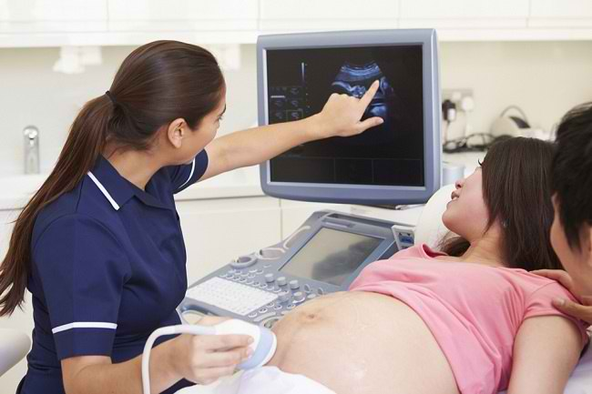
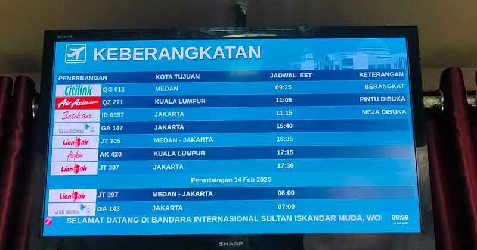
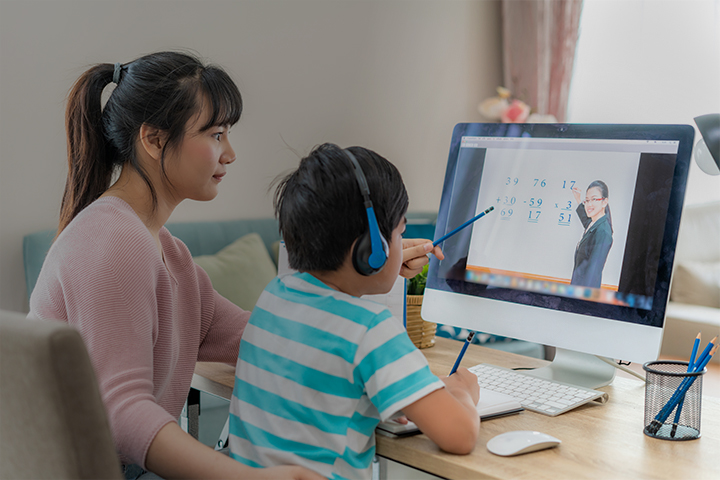
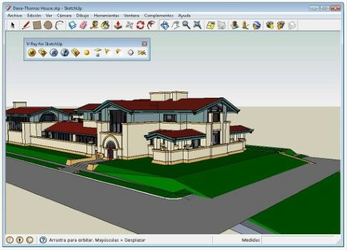
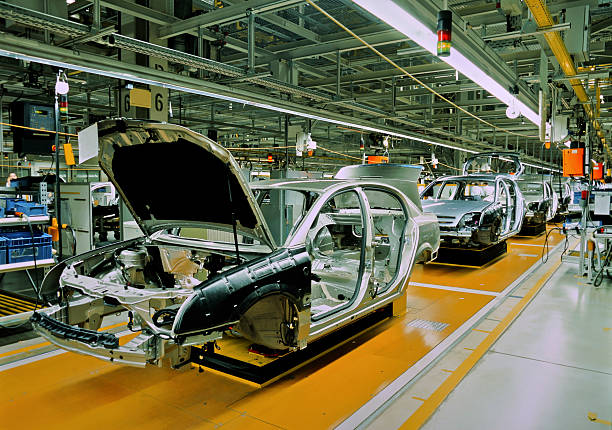
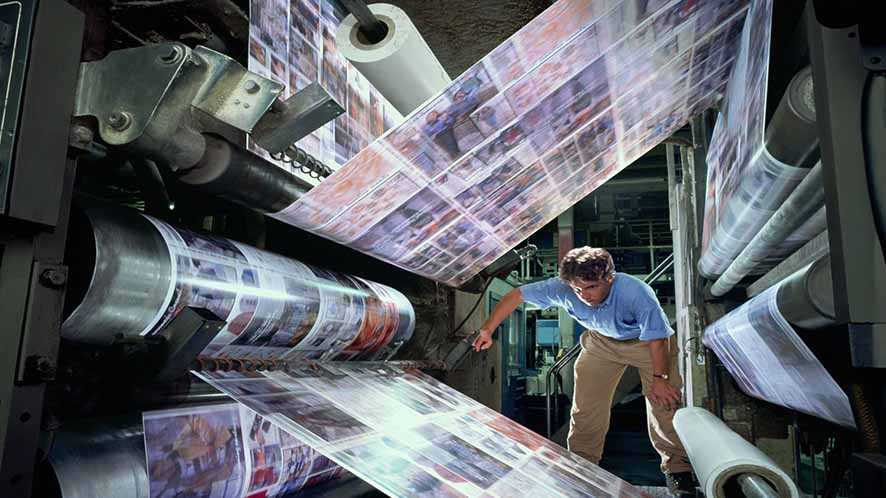
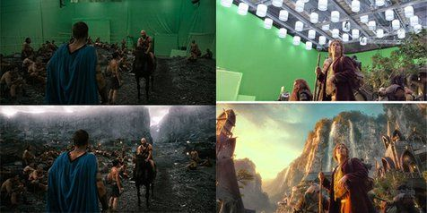

<!DOCTYPE html>
<html>
<head>
	<meta charset="utf-8">
	<meta name="viewport" content="width=device-width, initial-scale=1">
	<title>pertemuan_3</title>
	<link rel="stylesheet" type="text/css" href="style.css">
</head>
<body>
	<div class="navigation">
		<div class="prev">
			<a href="">
				<h4>Prev - Pertemuan_2</h4>
			</a>
		</div>
		<div class="next">
			<a href="">
				<h4>Next - Pertemuan_4</h4>
			</a>
		</div>
	</div>
	<div class="container">
		<div class="judul">
		  <h2>PERTEMUAN 3</h2>
		  <h3>PEMANFAATAN KOMPUTER DI MASYARAKAT</h3>
		  <hr>
		</div>
		<h4>TUJUAN PEMBELAJARAN</h4>
		<p>Setelah mempelajari materi pada pertemuan ke-3 ini mahasiswa dapat
			mengenal berbagai macam aplikasi komputer yang digunakan di berbagai 
			kalangan masyarakat.
		</p>
		<h4>URAIAN MATERI</h4>
		<div class="materi">
			<ol type="1">
				<li class="sub-judul">Masyarakat</li>
				<p>Masyarakat bisa diartikan sebagai seseorang yang harus berhubungan 
					dengan orang lainnya di dalam suatu kumpulan atau suatu kelompok. 
					Kehidupan masyarakat akan senantiasa berubah dan itupun tidak akan dapat 
					dihindari. Untuk memenuhi kebutuhannya manusia memerlukan manusia 
					lainnya, terlihat aneh apabila dalam suatu masyarakat atau kelompok yang 
					bersifat individual. Lembaga pendidikan bisa kita contohkan sebagai 
					masyarakat. Dimana lembaga pendidikan tidak akan bisa melakukan semua 
					kegiatannya apabila tidak adanya interaksi satu dengan yang lainnya. lembaga 
					pendidikan juga harus memiliki perubahan berhubungan dengan pihak lainnya, 
					lembaga pendidikan jikalau ingin memiliki perubahan seperti pembangunan 
					pendirian sekola, tentunya lembaga pendidikan membutuhkan jasa tukang 
					bangunan untuk membangun gedungnya. Beberapa pakar mengartikan masyarakat sebagai berikut :
				</p>
				<div>
					<ul type="square">
						<li>Menurut Max Weber, masyarakat merupakan suatu organisasi yang 
							memiliki struktur dimana hakikatnya memiliki nilai-nilai juga harapan pada 
							setiap individunya.
						</li>
						<li>Menurut Selo Soemardjan, mendefinisikan masyarakat yang berkumpul 
							atau berkelompok bersama dan akan menghasilkan suatu kebudayaan.
						</li>
						<li>Emile Durkheim mengartikan masyarakat sebagai suatu objektif perorangan 
							yang berada dalam suatu perkumpulan atau kelompok. Hidupnya 
							masyarakat apabila adanya sebuah sistem sosial atau sistematis interaksi 
							antar sesama dimana mengharuskan adanya interaksi sesama. 
						</li>
					</ul>
				</div>
				<p>Manusia dikenal mahluk yang bersosial, mereka membutuhkan satu 
					sama lain untuk dapat hidup, tidak akan bisa menghidupi kehidupan sendiri 
					atau individualisme dalam suatu masyarakat, apabila ada seseorang bersifat 
					seperti itu maka akan ada timbal balik dari masyarakat itu sendiri, yaitu sebagai 
					berikut :
				</p>
				<div>
					<ul type="square">
						<li>Tentunya ada contoh dimana contoh tersebut melebihi jumlah satu orang. </li>
						<li>Interaksi dari perorangan dengan isyarat.</li>
						<li>Ada renggang waktu dimana fungsi tersebut untuk menentukan sifat yang sedang berjalan.</li>
						<li>Memiliki suatu tujuan yang memang sudah di rencanakan.</li>
					</ul>
				</div>
				<li class="sub-judul">Dinamika Masyarakat</li>
				<p>Perubahan yang terjadi dengan keadaan lingkungan dinamis manusia 
					harus benar-benar memiliki rasa menghargai satu dengan yang lainnya agar 
					dapat hidup berkelompok dan dapat beradaptasi dengan lingkungan sekitarnya. 
					Dimana manusia harus memaksa seluruh pikiran, keaktifan, berpikir kreatif, 
					serta daya tahan untuk menghadapi kenyataan dalam hidup bermasyarakat. 
					Contoh kecilnya yaitu apabila ada seseorang dalam kondisi yang sakit pastinya 
					mencari rumah sakit untuk penanganan lanjutan, dalam kondisi lapar pastinya 
					seseorang harus mencari tempat makan. Beberapa pakar berpendapat sama 
					mengenai kehidupan manusia akan selalu berubah, kondisi seperti ini 
					dinamakan sebagai perubahan sosial.
				</p>
				<li class="sub-judul">Pemanfaatan Komputer</li>
				<p>Tentunya dalam kehidupan sehari-hari komputer sangat berpengaruh 
					dan sangat berperan bagi kehidupan manusia, baik itu untuk seseorang 
					ataupun sekelompok manusia. Dan pastinya hal ini berlaku untuk semua 
					negara baik itu negara maju ataupun negara berkembang seperti Indonesia. 
					Tidak ada yang berbeda dari teknologi komputer dengan teknologi lainya 
					seperti teknologi dalam bidang transportasi seperti pesawat terbang, kapal laut, 
					mobil, televisi dan lain sebagainya.
				</p>
				<p>Komputer diera masa kini sudah pasti memiliki banyak peningkatan 
					kelebihan dari sekedar perhitungan matematika. Contoh kecil adanya sistem 
					komputer di jasa pengiriman dengan kemampuan dapat melacak barcode barang yang telah dikirim, data center sebagai penampung ratusan bahkan 
					jutaan data dari seluruh Indonesia.
				</p>
				<div class="cabang-materi">
					<ol type="a">
						<li class="sub-materi">Sebagai Alat Pengolah Data</li>
						<p>Sejak dahulu hingga saat ini komputer sebagai alat pengolah data 
							atau pemroses data, dapat dibagi menjadi 4 bagian, seperti :
						</p>
						<ul type="square">
							<li>Alat Mekanik Elektronik, dimana terdapat alat yang dapat melakukan 
								secara otomatis dalam pergerakannya dilakukan oleh motor elektrik.
							</li>
							<li>Peralatan Mekanik, dimana terdapat alat dalam bentuk nyata dengan 
								mekanik yang digerakkan secara manual.
							</li>
							<li>Peralatan manual, dimana terdapat alat yang dapat mengolah data 
						    	sangat sederhana, dimana tenaga manusia menjadi objek utamanya.
							</li>
							<li>Peralatan Elektronik, terdapat komponen alat yang bekerja secara full 
							    elektronik.
							</li>	
						</ul>
						<li class="sub-materi">Komputer dalam kehidupan</li>
						<p>Tentunya komputer memiliki manfaat di dalam kehidupan seseorang 
							ataupun sekelompok masyarakat. Banyak sekali kita jumpai, dimana 
							komputer sangat mempermudah pekerjaan, mempercepat pekerjaan, 
							diantaranya :
						</p>
						<ol type="1" class="komputer">
							<li>Bidang Kesehatan</li>
							<p>Manfaat pada bidang kesehatan tentunya sangat berpengaruh 
								dan sangat mempermudah Perawat ataupun Dokter untuk memantau 
								kesehatan pasien, contoh kecilnya yaitu melihat perkembangan bayi 
								dalam perut ibu, aliran darah, detak jantung, memeriksa organ dalam 
								pasien dengan sinar X dan bayak lagi lainnya.
							</p>
							
							<p class="judul-gambar">Gambar 3.1 Dokter Melihat Perkembangan Bayi</p>
							<li>Bidang Transportasi</li>
							<p>Dengan adanya komputer tentunya seluruh jadwal mulai dari 
								penerbangan ataupun kereta dan transportasi lainnya dapat terpantau 
								secara luas, contoh kecilnya yaitu jadwal pesawat yang tertera pada 
								layar atau monitor besar.
							</p>
							
							<p class="judul-gambar">Gambar 3.2 Jadwal Pesawat</p>
							<p>Bahkan pada pesawat apabila sudah mencapai ketinggian 
								tertentu komputer sudah memprogramkan. Adanya komputer, navigasi 
								pesawat bisa ditentukan koordinat dan diterbangkan secara otomatis. 
								Penjualan tiketnyapun sudah dilayani komputer.
							</p>
							<li>Bidang Pendidikan</li>
							<p>Dengan adanya komputer dibidang pendidikan seperti saat ini 
								akibat dampak dari wabah virus COVID-19, tentunya komputer sangat berpengaruh dan sangat berperan aktif dalam bidang pendidikan. 
								Dimana yang kita tahu sekolah sekarang akibat dampak virus COVID19 siswa tidak dapat belajar bertatap muka langsung dalam kelas tetapi
								menggunakan metode e-learning atau belajar dari rumah masing
								masing seperti gambar dibawah ini :
							</p>
							
							<p class="judul-gambar">Gambar 3.3 E-Learning</p>
							<p>Untuk pegawai administrasi sekolah tentunya sangat 
								memudahkan pembuatan data-data siswa ataupun pembayaran. 
								Mengakses Informasi Pendidikan melalui Internet.
							</p>
							<li>Bidang Jasa Pengiriman Barang</li>
							<p>Seperti yang kita tahu bahwa saat ini tentunya sudah banyak 
								jasa-jasa pengiriman barang seperti JNE, JNT, TIKI, Kantor Pos dan 
								lain-lain. Mereka mengakses pengiriman dengan cepat dan lebih akurat 
								melalui komputer. Dengan adanya komputer dan internet orang dengan 
								mudahnya mengirimkan surat melalui email dan tidak perlu lagi repotrepot menunggu sampai berhari-hari, menjadikan dunia yang begitu 
								besarnya mudah diakses dan dijangkau.
							</p>
							
							<p class="judul-gambar">Gambar 3.4 Email</p>
							<li> Bidang Jasa Konstruksi</li>
							<p>Tentunya dengan adanya komputer sangat memudahkan para 
								Arsitek mendesain gambar bangunan atau rancangan konstruksi 
								dengan gambar 2d atau 3d tentunya gambar dengan hasil yang 
								maksimal dari segi perhitungan akurat dan tepat. Gambar konstruksi 
								dengan mudah dibuat dengan menggunakan aplikasi seperti sketchup 
								maupun autocad dan lain-lain.
							</p>
							
							<p class="judul-gambar">Gambar 3.5 Design Melalui Apk Sketchup</p>
							<li>Bidang Pertahanan dan Keamanan Negara</li>
							<p>Pada bidang pertahanan tentunya komputer sangat berperan 
								aktif di berbagai segi dalam pertahanan. Dimana komputer dapat 
								mengendalikan senjata-senjata ataupun peluru kendali untuk 
								pengoperasiannya.
							</p>
							<li>Bidang industri</li>
							<p>Berbagai perusahaan industri pastinya komputer yang 
								memegang kendali pada mesin-mesin yang telah didesain khusus 
								dengan penggunaannya.
							</p>
							
							<p class="judul-gambar">Gambar 3.6 Industri Mobil</p>
							<li>Bidang Jasa</li>
							<p>Pemanfaatan komputer pada bidang jasa seperti percetakan 
								koran atau majalah. Dimana semua pencetakan yang digunakan 
								dengan mesin yang dimotori oleh komputer terprogram.
						    </p>
						    
						    <p class="judul-gambar">Gambar 3.7 Pencetakan Koran</p>
						    <li>Bidang Industri Perfilman</li>
						    <p>Industri perfilman tentunya banyak sekali menggunakan 
								komputer dalam penyuntingan filem ataupun pengeditan film. Jelas 
								dampak dengan adanya komputer dunia perfilman yang semula hanya 
								bergambarkan seadanya dan berwarna hitam putih sekarang sudah benar-benar berubah dan menjadi tontonan yang sering disaksikan 
								masyarakat.
							</p>
							
							<p class="judul-gambar">Gambar 3.8 Efek Green Screen</p>
							<li> Bidang Industri Rekaman</li>
							<p>
								Di dalam industri rekaman tentunya komputer sangat 
								berpengaruh contoh kecil seperti penyanyi yang mungkin suaranya tidak 
								begitu merdu bisa diedit dan dihaluskan suaranya dengan komputer 
								menjadi lebih baik dari suara aslinya. Lalu apabila ingin mencetak album 
								atau suatu lagu rekaman tentunya komputer yang menangani itu 
								semua.
							</p>
							<li>Bidang Olahraga</li>
							<p>Pada bidang olahraga contoh kecilnya yaitu pada permainan 
								sepak bola dimana wasit dapat melihat rekaman apabila adanya suatu 
								pelanggaran yang tidak terlihat oleh mata kepala sang wasit.
							</p>
						</ol>
					</ol>
				</div>
				<li class="sub-judul">Dampak Akibat Adanya Komputer</li>
				<p>Dengan adanya komputer pastinya memiliki dampak positif ataupun 
					negatif, dimana kita harus bisa memposisikan diri terhadap adanya komputer 
					yang terus berkembang pada masa kini. Dengan adanya komputer tentunya 
					kita tahu apa saja yang terjadi atau dampak dengan adanya komputer, isu 
					sosialpun berdatangan akibat penggunaan komputer di masyarakat. Adapun 
					beberapa dampak yang ditimbulkan di kehidupan masyarakat :
				</p>
				<div class="cabang-materi">
					<ol type="a">
						<li>Dampak yang bersifat positif</li>
						<div class="cabang-materi">
						<ol type="1">
							<li>Mendapatkan informasi yang lebih mudah dan cepat</li>
							<p>Tentunya dengan adanya komputer kita lebih mudah mencari informasi, 
								contohnya yaitu dengan adanya google kita dapat mencari informasi 
								yang ingin kita selidiki lebih lanjut.
							</p>
							<li>Berkomunikasi lebih baik</li>
							<p>Tidak bisa dipungkiri pasti dengan adanya komputer kita menjadi lebih 
								mudah berkomunikasi, contohnya penggunaan e-mail, smartphone dan 
								lain sebagainya.
							</p>
							<li>Memudahkan pekerjaan</li>
							<p>Dengan adanya komputer yang berdampak pada pekerjaan, pasti 
								komputer sudah banyak sekali membantu dalam bidang pekerjaan di 
								berbagai macam pekerjaan atau berbagai bidang. 
							</p>
							<li>Transportasi yang lebih baik</li>
							<p>Dengan adanya komputer tentunya alat transportasi semakin mudah 
								contohnya: order ojek online.
							</p>
						</ol>
						</div>
						<li>Dampak Negatif</li>
						<div class="cabang-materi">
						<ol type="1">
							<li>Kurangnya sosialisasi secara langsung</li>
							<p>Akibat perkembangan teknologi membuat orang zaman sekarang lebih 
								sering berinteraksi secara online contohnya penggunaan facebook, 
								instagram, dan lain-lain.
							</p>
							<li>Data mudah dicuri</li>
							<p>Disaat kita menyimpan data-data penting atau informasi rahasia 
                               tentunya komputer yang terkoneksi dengan internet akan dapat dicuri.
                            </p>
                            <li>Pekerjaan yang digantikan oleh mesin</li>
                            <p>Disebagian besar industri banyak yang sudah diambil alih oleh mesin, 
								dimana mesin lebih mudah dioperasikan dan dikendalikan, tidak 
								mengenal lelah 24 jam runningpun bisa, dan tanpa gaji.
							</p>
						</ol>
						</div>
					</ol>
				</div>
				<p>Consciousness (kesadaran) masyarakat tentunya sebagai solusi 
                   utama bagi mereka dalam mempergunakan kemajuan teknologi harus seefisien mungkin. Peranan keluarga sangatlah penting untuk menjaga satu 
					dengan yang lainnya, peranan keluarga yang harus diperhatikan sebagai 
					berikut :
               </p>
               <ol type="1">
               	<li>Sosialisasi, keluarga merupakan hal yang harus dapat merangkul 
					sesama keluarga, contohnya kepada anak dimana peranan orang tua 
					harus benar-benar extra, orang tua harus dapat bersosialisasi dengan 
					anak sebaik mungkin.</li>
				<li>Skala prioritas kebutuhan teknologi, cara ini dilakukan dikarenakannya 
					takut akan terus berkonsumsi pada produk-produk teknologi seperti 
					komputer. Penentuan konsumsi pada teknologi harus diterapkan agar 
					dapat memposisikan dengan benar pada suatu teknologi. Contohnya 
					apabila pada keluarga yang sudah memiliki televisi tentunya tidak perlu 
					masing-masing ruangan ada televisi yang sama, karena akan 
					berdampak pemborosan. </li>
				<li>Peranan orang tua yang mengharuskan tau terhadap perkembangan 
					teknologi. Tentunya orang tua masa kini harus menjaga dan mengontrol 
					perilaku keluarganya, contohnya yang ditakutkan dalam penggunaan 
					internet yang bebas akses.</li>
				<li>Pembimbingan orang tua kepada anak yang harus selalu diawasi dalam 
					setiap penggunaan teknologi yang dipergunakan, khususnya dalam 
					penggunaan internet.</li>
			    <li>Peranan orang tua yang harus dilakukan adalah merangkul anak atau 
					meluangkan waktu untuk anak agar lebih erat tali hubungan antara 
					orang tua dan anak.</li>
				<li>Meningkatkan rasa kesadaran pada diri anak untuk memposisikan 
					dirinya dengan benar, agar setiap anak dapat memanfaatkan teknologi 
					yang ada dengan benar.
					</li>
               </ol>
               <li class="sub-judul">Isu Sosial dan Masalah yang Terjadi di Masyarakat</li>
               <p>Semua yang terjadi dalam kehidupan pasti tidak lepas dari yang 
					namanya dampak, baik yang bersifat positif maupun negatif. Begitu pula isu-isu 
					yang tersebar luas dikalangan masyarakat terkait dengan komputer dan 
					teknologi. Walaupun Komputer dan Teknologi sudah banyak membantu kegiatan manusia, namun ada saja isu yang kurang berkenaan dengan kehidupan sosial. Beberapa jenis isu yang diangap cukup menonjol seperti :
				</p>
				<ol type="a">
					<li>Bidang Pekerjaan</li>
					<p>Banyak yang berkata dan mengaitkan bahwa peranan komputer dapat 
                       menggeser peran manusia dalam bidang pekerjaan.
                   </p>
                   <li>Bidang Kesehatan</li>
                   <p>Dengan adanya komputer dan teknologi membuat manusia jadi malas 
						bergerak karena kemudahan-kemudahan yang bisa diberikan, sehingga 
						dapat mengganggu kesehatan karena terlalu banyak duduk dan malas 
						bergerak, belum lagi soal kesehatan mata juga dapat terganggu.
					</p>
					<li>Hak Kebebasan Pribadi</li>
					<p>Komputer dan teknologi dapat memberikan kebebasan dalam memberikan 
						data pribadi yang dimiliki oleh masyarakat, sehingga banyak yang ketakutan 
						datanya akan disalah gunakan.
					</p>
					<li>Kendali yang Terpusat</li>
					<p>Penguasa akan semakin menguasai distribusi pengelolaan data dan bisa 
						sewenang-wenang terhadap kekuasaan mereka karena dapat 
						mengendalikan secara terpusat semua data.
					</p>
					<li>Tanggung Jawab</li>
					<p>Apakah setiap masyarakat bertanggung jawab apabila ada data pribadi 
						mereka yang tersebar luas? Apakah tanggung jawab dari masyarakat 
						dengan adanya teknologi dan komputer maka semua harus beralih 
						menggunakannya?
					</p>
					<li>Citra Diri Manusia</li>
					<p>Apakah komputer dan teknologi dapat mempengaruhi citra diri manusia? 
						Apakah citra diri manusia dapat lebih menonjol karena mereka bisa 
						menggunakan komputer?
					</p>
					<li>Etika dan Profesionalisme</li>
					<p>Apakah para ahli komputer memiliki etika profesi seperti layaknya dokter 
                       dan para ahli di bidang hukum? 
                   </p>
                   <li>Kepentingan Nasional</li>
                   <p>Apakah dengan komputer maka ekonomi di Negara tersebut akan 
                      membantu pemerintah dalam mensejahterakan masyarakat?
                  </p>
                  <li>Kesenjangan keahlian</li>
                  <p>Apakah kesenjangan keahlian dapat menimbulkan persaingan di atara 
                     masyarakat ?
                 </p>
				</ol>
			</ol>
		</div>
	</div>
</body>
</html>